Conferência do verificador, 13/10/2026. Investigação: nada do programa foi mudado. Quem decide o que fazer é o Samuel.
No livro novo o corte ficou pior em 6 das 89 páginas conferidas: em 4 sobra uma faixa preta larga do scanner que antes era cortada (de 1,6 a 4,4 cm a mais), em 1 o corte come os números dos itens na margem, e em 1 sobra um fio escuro de 2 mm. As 5 graves estão todas fora das páginas-gabarito, por isso não apareceram na aprovação de 12/10.
Das 89 páginas, 46 saem idênticas nas duas ordens (o programa não gira a página, então a ordem não muda nada). Das 43 que giram: 5 pioraram de verdade, 1 piorou pouco, 1 piorou num ponto já anotado no plano (Escola 7), 8 melhoraram, 1 mudou muito sem perder nada (Rariora 155) e as outras 27 ficaram iguais ou quase iguais.
Projeto antigo: não tem o defeito. Em 40 de 40 casos conferidos, o projeto gravado pelo programa de antes do G6 sai, no programa de hoje, idêntico ponto por ponto.
"Faixa escura" é quanto da página é mancha escura encostada na beirada (a mesma conta do aviso "Faixa escura na beirada"). "Tinta de fora" é quanto do que está impresso fica fora do corte. Sempre ordem antiga → ordem nova. Tamanho em milímetros.
| Página | Veredito (olho) | O que mudou | Faixa escura | Tinta de fora | Tamanho da folha | No gabarito |
|---|---|---|---|---|---|---|
| Matemática 32 | PIOROU | Faixa preta larga do scanner à direita, que a ordem antiga cortava. A folha fica 4,4 cm mais larga só de preto. (O preto de baixo sobra nas duas ordens.) | 18,4% → 31,5% | 0,01% → 0,01% | 165 × 297 → 209 × 290 | não |
| Cursus 3 | PIOROU | Faixa preta de 1,6 cm à direita e de 0,6 cm embaixo, que a ordem antiga cortava. A linha preta da esquerda fica nas duas. | 0,5% → 7,5% | 0,12% → 0,03% | 201 × 268 → 212 × 279 | não |
| Antiphon 260 | PIOROU | A faixa preta de baixo passa de 2,1 cm para 4,9 cm. | 3,2% → 7,6% | 0,00% → 0,00% | 464 × 590 → 463 × 618 | não |
| Antiphon 88 | PIOROU | A faixa preta da direita passa de 0,9 cm para 2,8 cm. (Há preto em volta nas duas ordens.) | 8,5% → 12,6% | 0,00% → 0,00% | 438 × 621 → 456 × 624 | não |
| Escola 197 | PIOROU | O corte come os números 1, 2 e 3 dos itens, na margem esquerda. Na ordem antiga eles saíam inteiros. | 0,0% → 0,0% | 0,03% → 0,28% | 160 × 243 → 155 × 243 | não |
| Camões 104 | piorou pouco | Aparece um fio escuro de 2 mm à esquerda e de menos de 1 mm à direita, que a ordem antiga não deixava. | 0,5% → 2,7% | 0,01% → 0,01% | 93 × 132 → 95 × 131 | não |
| Escola 7 | piorou (já conhecido) | O título fica a 1 mm da borda de cima (na ordem antiga sobravam 18 mm de papel, com um risco do scanner no alto). Nada impresso se perde. Já está anotado no plano (12/10) como "título colado na borda de cima". | 0,0% → 0,0% | 0,12% → 1,81% | 165 × 264 → 165 × 246 | sim |
| Camões 6 | quase igual | Quase igual. Aparece um fio escuro de 1,3 mm em cima; o da esquerda já existia. | 1,0% → 1,9% | 0,00% → 0,00% | 92 × 130 → 92 × 130 | não |
| Camões 66 | quase igual | Troca: somem as cunhas brancas dos cantos e o fio escuro de baixo; aparece um fio escuro de 1,4 mm à esquerda. | 0,2% → 0,9% | 0,12% → 0,04% | 91 × 131 → 92 × 130 | não |
| Horas 11 | igual (a conta errou) | Ao olho as duas são iguais (na nova somem as cunhas brancas). A conta contou como "faixa" a pintura da moldura, que chega perto da beirada. | 4,8% → 8,2% | 0,07% → 0,07% | 313 × 477 → 311 × 477 | sim |
| Rariora 155 | mudou muito | A folha fica 3,5 cm mais curta: o papel em branco de baixo foi cortado e a moldura da gravura fica a 1 mm da borda. Nada impresso se perde. Para o Samuel olhar. | 0,0% → 0,0% | 0,04% → 0,03% | 133 × 148 → 133 × 113 | não |
Como ler: as seis primeiras linhas são as que pioraram. A Escola 7 já está anotada no plano. Camões 6 e 66 a conta acusou, mas ao olho é troca de um defeito pequeno por outro. Horas 11 a conta errou. Rariora 155 a conta deu "igual", mas a folha mudou muito de tamanho.
Todas sem filtro (só o corte e o giro), a 300 DPI, na mesma escala dos dois lados.
O que olhar: A faixa preta à direita, que só existe na ordem nova.
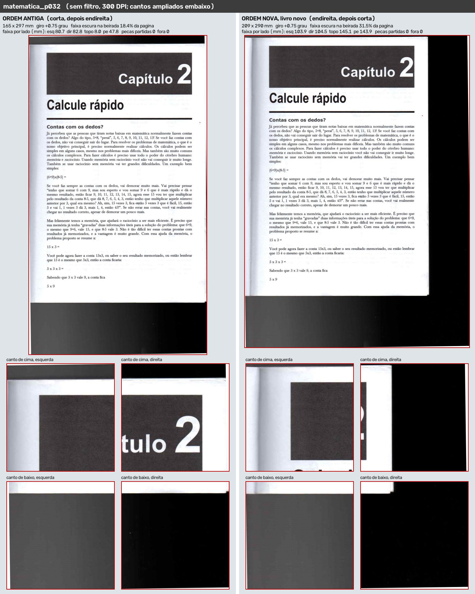
Matemática 32: ordem antiga à esquerda, ordem nova (livro novo) à direita; embaixo, os quatro cantos ampliados.
O que olhar: A faixa preta à direita e a de baixo, que só existem na ordem nova. É a página do achado.
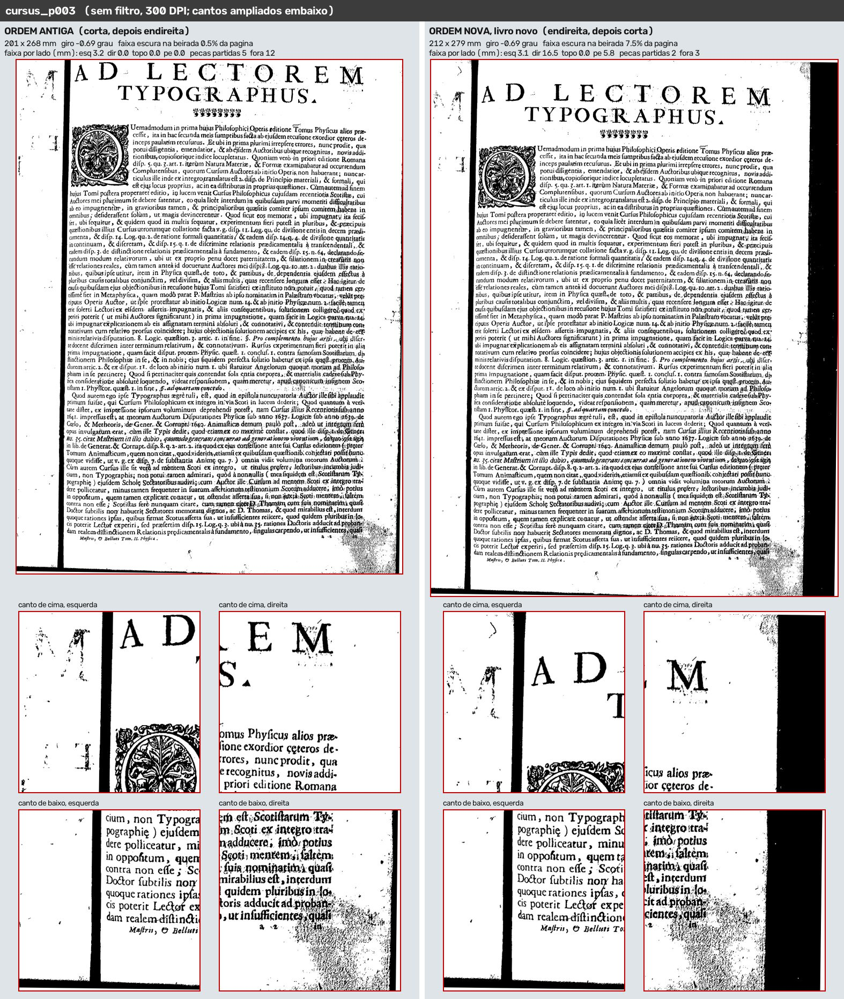
Cursus 3: ordem antiga à esquerda, ordem nova (livro novo) à direita; embaixo, os quatro cantos ampliados.
O que olhar: A faixa preta de baixo, bem mais alta na ordem nova.
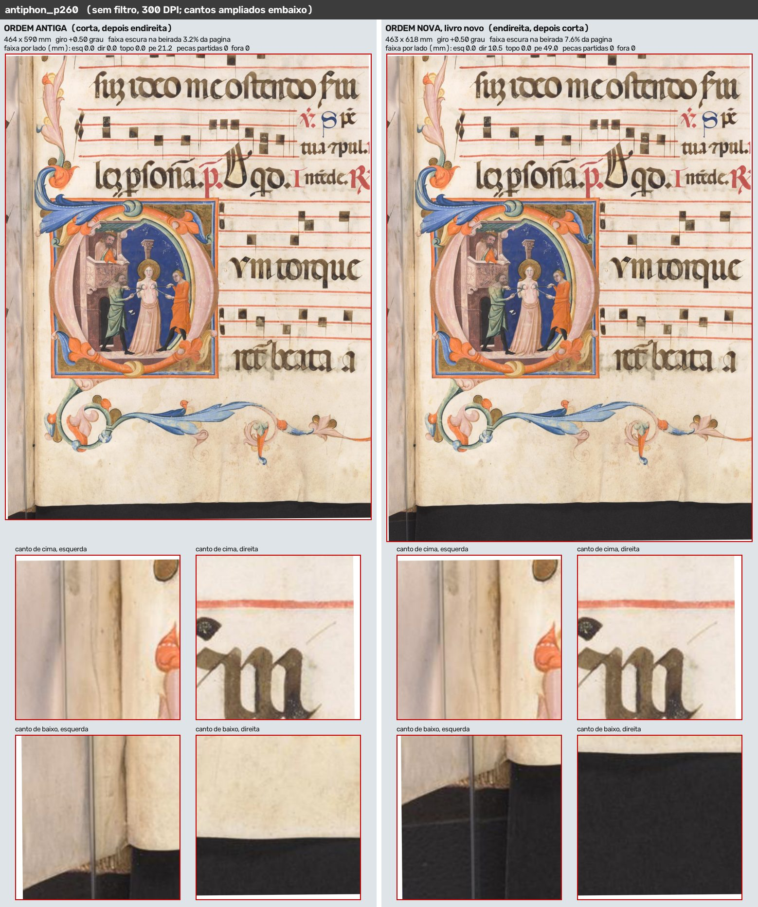
Antiphon 260: ordem antiga à esquerda, ordem nova (livro novo) à direita; embaixo, os quatro cantos ampliados.
O que olhar: A faixa preta da direita, mais larga na ordem nova.
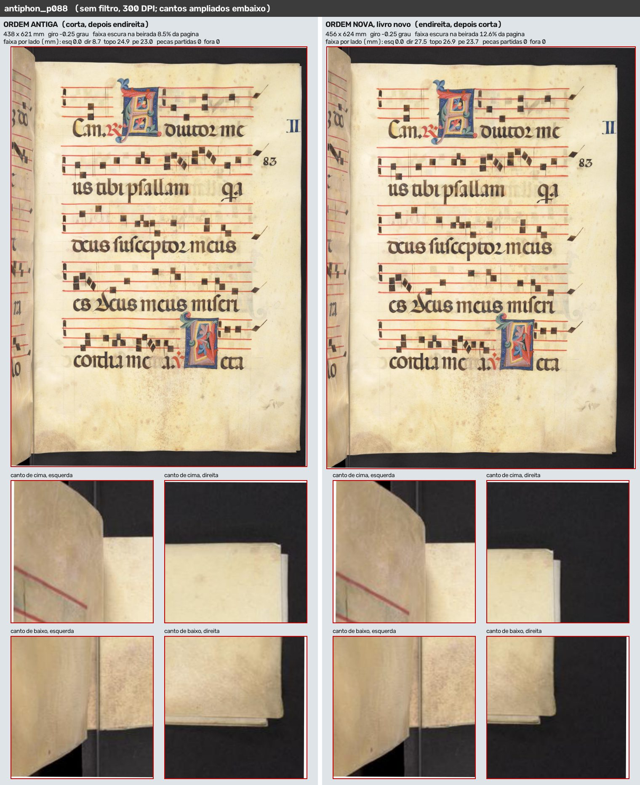
Antiphon 88: ordem antiga à esquerda, ordem nova (livro novo) à direita; embaixo, os quatro cantos ampliados.
O que olhar: A margem esquerda: os números 1, 2 e 3 somem na ordem nova (só fica o travessão).
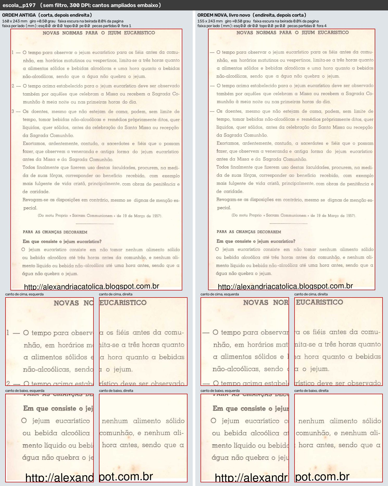
Escola 197: ordem antiga à esquerda, ordem nova (livro novo) à direita; embaixo, os quatro cantos ampliados.
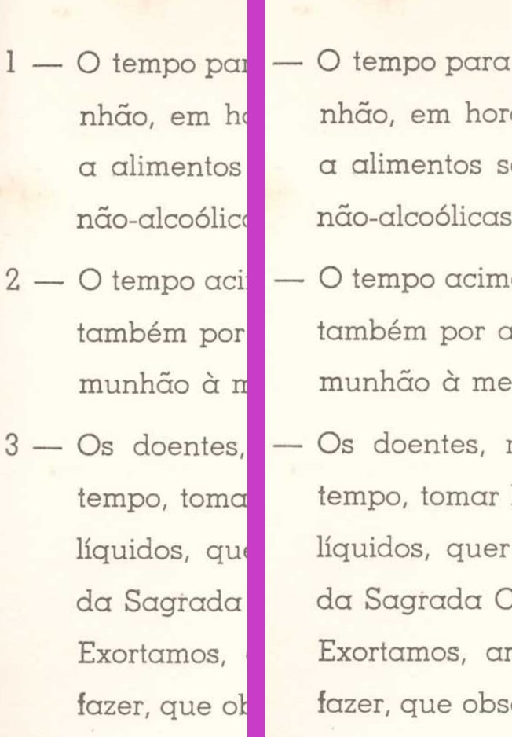
Escola 197, a margem esquerda de perto. À esquerda a ordem antiga (com os números); à direita a nova (sem eles).
O que olhar: O fio escuro colado na borda esquerda, só na ordem nova.
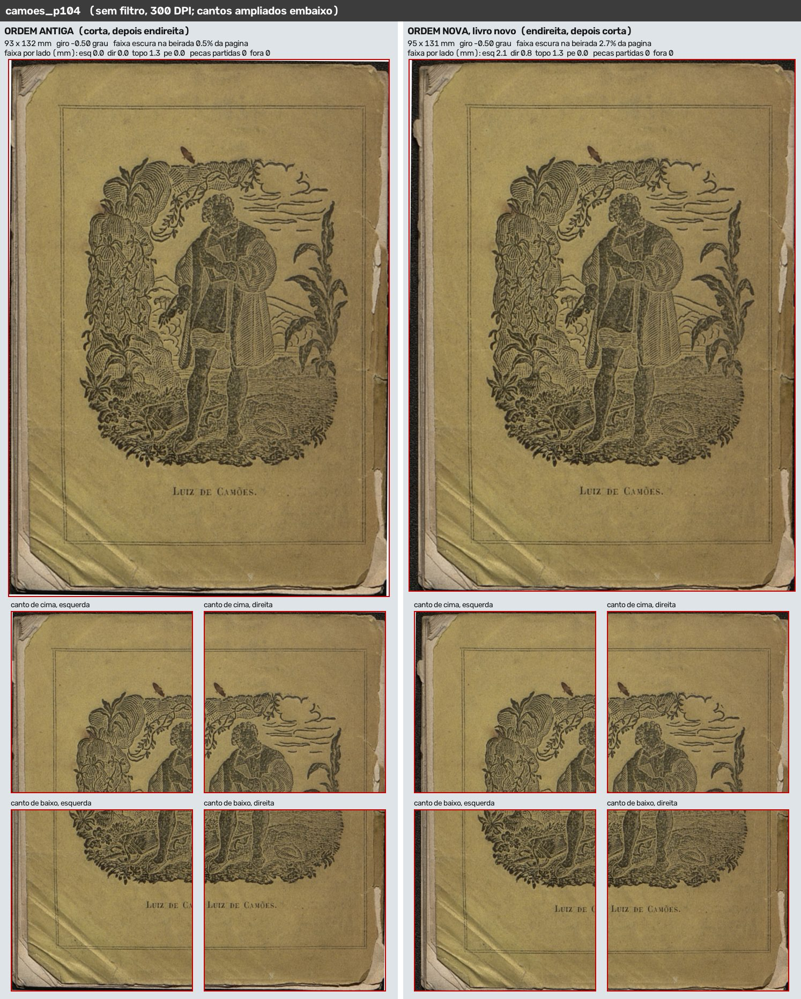
Camões 104: ordem antiga à esquerda, ordem nova (livro novo) à direita; embaixo, os quatro cantos ampliados.
O que olhar: O título no alto: colado na borda na ordem nova.
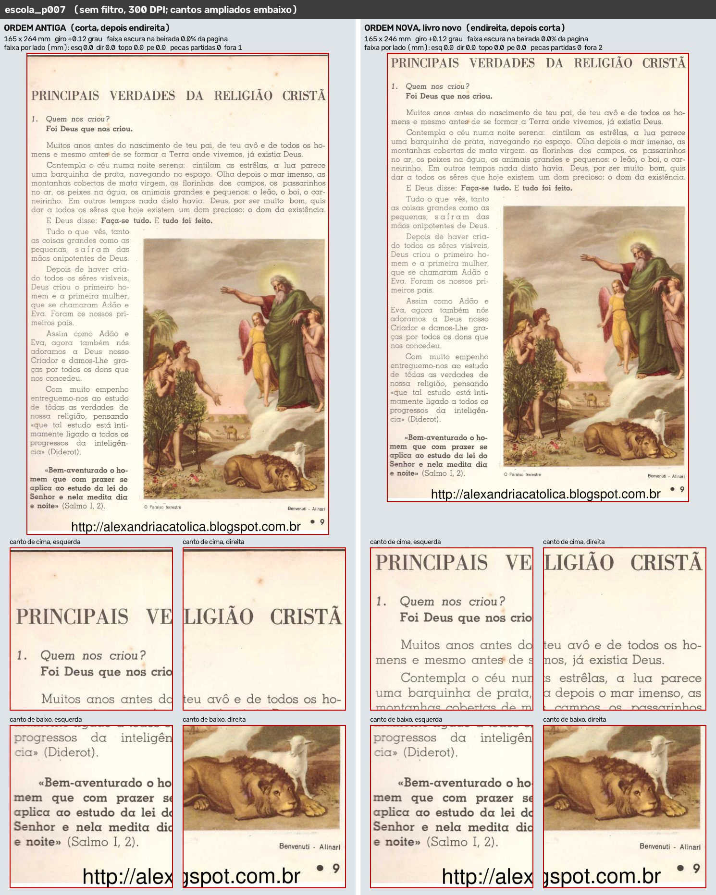
Escola 7: ordem antiga à esquerda, ordem nova (livro novo) à direita; embaixo, os quatro cantos ampliados.
O que olhar: O fio escuro no alto, só na ordem nova. O resto é igual.
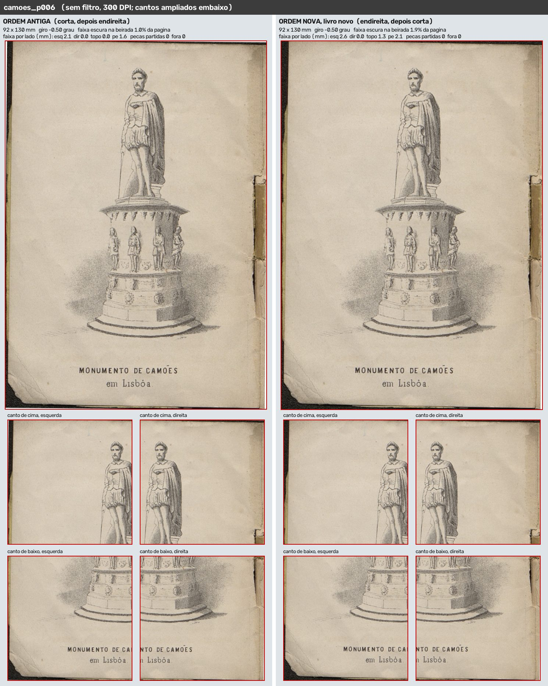
Camões 6: ordem antiga à esquerda, ordem nova (livro novo) à direita; embaixo, os quatro cantos ampliados.
O que olhar: Os cantos: cunha branca na antiga, fio escuro à esquerda na nova.
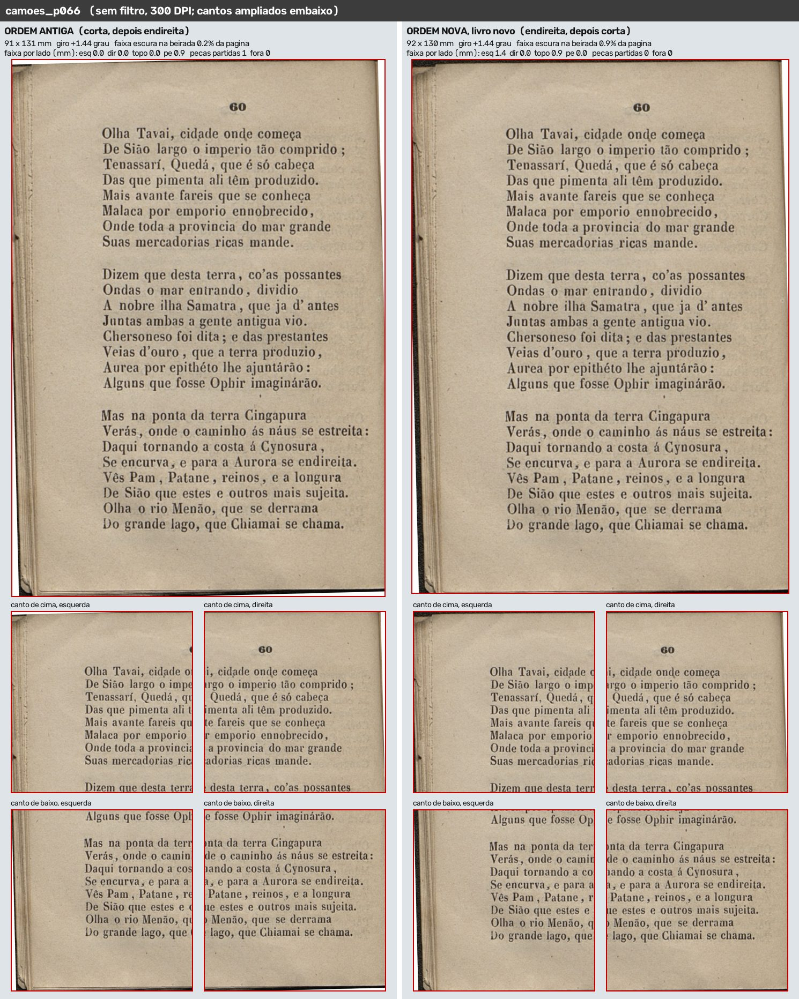
Camões 66: ordem antiga à esquerda, ordem nova (livro novo) à direita; embaixo, os quatro cantos ampliados.
O que olhar: As duas são iguais ao olho; a conta errou aqui.
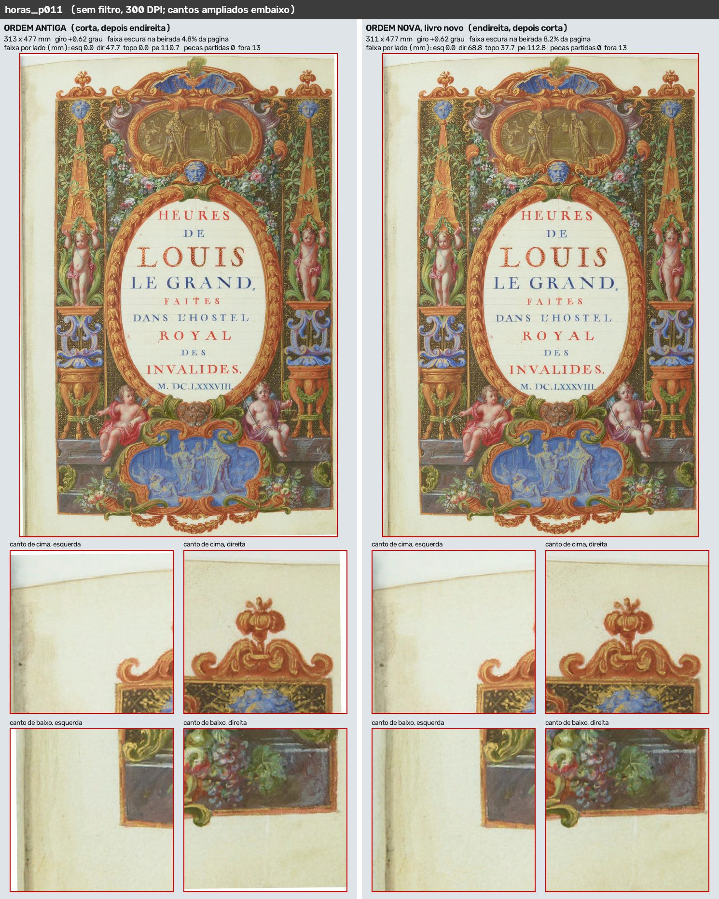
Horas 11: ordem antiga à esquerda, ordem nova (livro novo) à direita; embaixo, os quatro cantos ampliados.
O que olhar: A parte de baixo: na ordem nova o papel em branco foi cortado.
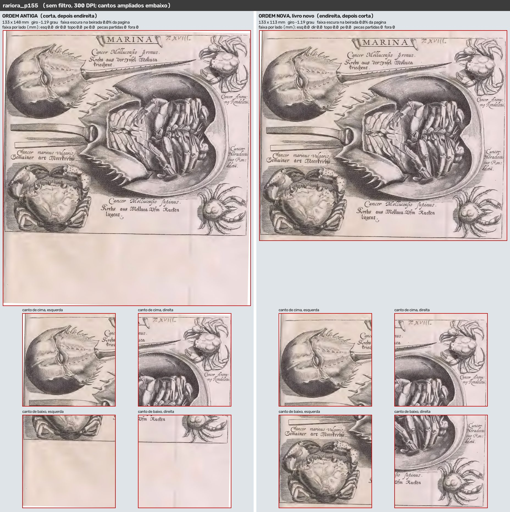
Rariora 155: ordem antiga à esquerda, ordem nova (livro novo) à direita; embaixo, os quatro cantos ampliados.
| Página | O que melhorou | Tinta de fora | Tamanho da folha |
|---|---|---|---|
| Boécio 22 | O título deixa de ficar colado na borda de cima. | 0,13% → 0,01% | 83 × 118 → 83 × 122 |
| Egenloff 3 | Um pouco menos de preto e de cunha branca à esquerda. Quase igual. | 0,26% → 0,30% | 346 × 454 → 338 × 454 |
| Graduale 221 | O número da folha ("Cvij") sai inteiro; na antiga o giro cortava o fim dele. Somem as cunhas brancas de cima e de baixo. | 0,20% → 0,03% | 331 × 452 → 337 × 463 |
| Graduale 223 | O número da folha ("Cviij") sai inteiro; na antiga saía cortado. | 0,01% → 0,00% | 335 × 445 → 337 × 462 |
| Graduale 588 | Mais margem em volta; os enfeites de pena da inicial saem inteiros. Fica uma cunha branca fina à direita. | 0,24% → 0,12% | 306 × 451 → 312 × 472 |
| Horas 13 | Somem as cunhas brancas; mais papel embaixo. | 0,08% → 0,02% | 352 × 492 → 351 × 501 |
| Rhetorica 73 | O fio da moldura, à esquerda e embaixo, sai inteiro (na antiga saía cortado). | 0,63% → 0,00% | 136 × 197 → 137 × 199 |
| Siebmacher 9 (direita) | Um pouco menos de preto em cima. Fica uma cunha branca fina à direita. | 0,01% → 0,01% | 60 × 106 → 60 × 105 |
O que olhar: O fio da moldura, à esquerda e embaixo, sai inteiro (na antiga saía cortado).
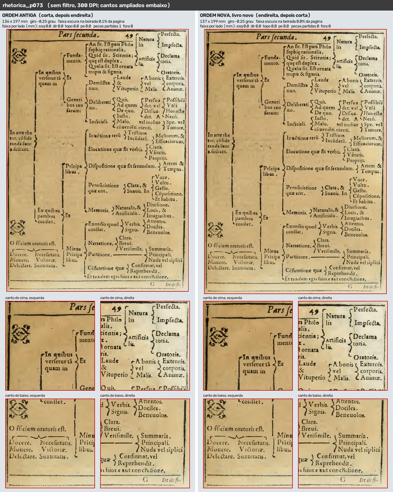
Rhetorica 73: ordem antiga à esquerda, ordem nova (livro novo) à direita; embaixo, os quatro cantos ampliados.
O que olhar: O número da folha ("Cvij") sai inteiro; na antiga o giro cortava o fim dele. Somem as cunhas brancas de cima e de baixo.
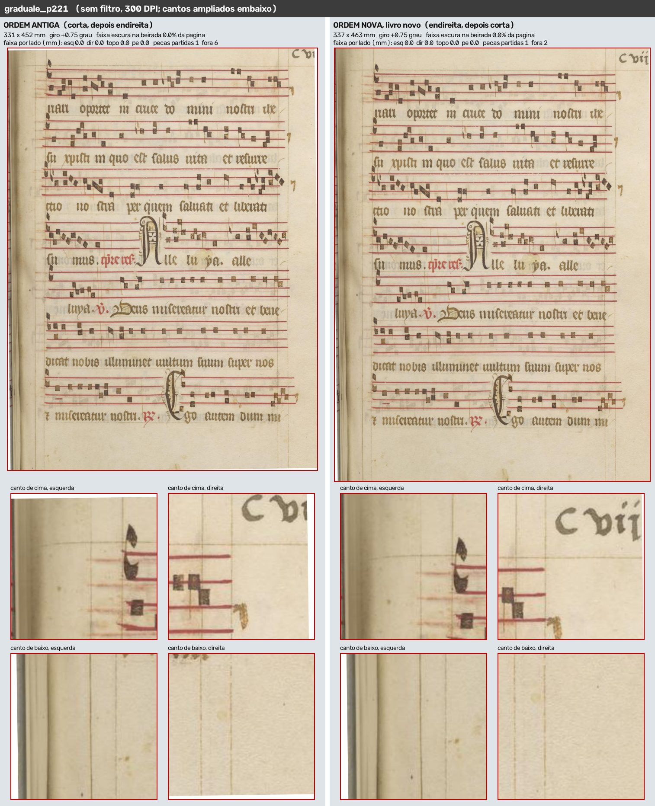
Graduale 221: ordem antiga à esquerda, ordem nova (livro novo) à direita; embaixo, os quatro cantos ampliados.
O que olhar: Mais margem em volta; os enfeites de pena da inicial saem inteiros. Fica uma cunha branca fina à direita.
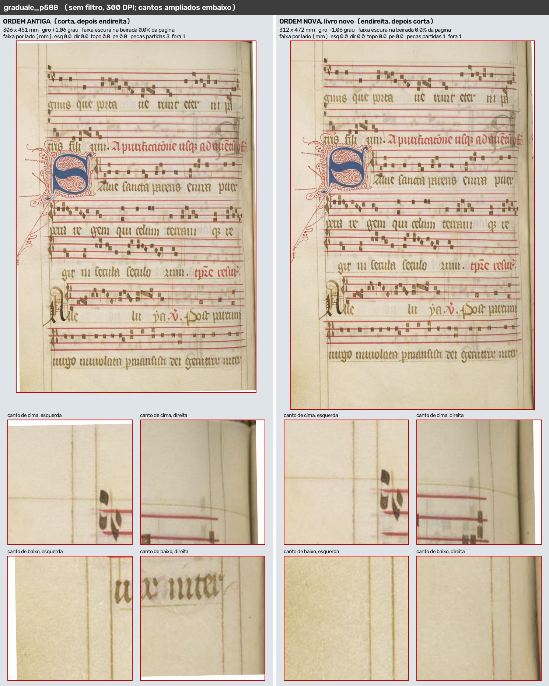
Graduale 588: ordem antiga à esquerda, ordem nova (livro novo) à direita; embaixo, os quatro cantos ampliados.
O que olhar: O título deixa de ficar colado na borda de cima.
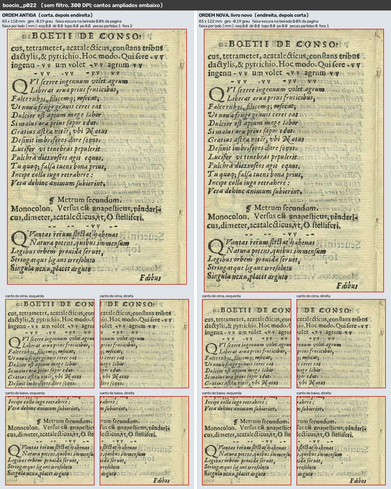
Boécio 22: ordem antiga à esquerda, ordem nova (livro novo) à direita; embaixo, os quatro cantos ampliados.
O que olhar: Um pouco menos de preto em cima. Fica uma cunha branca fina à direita.
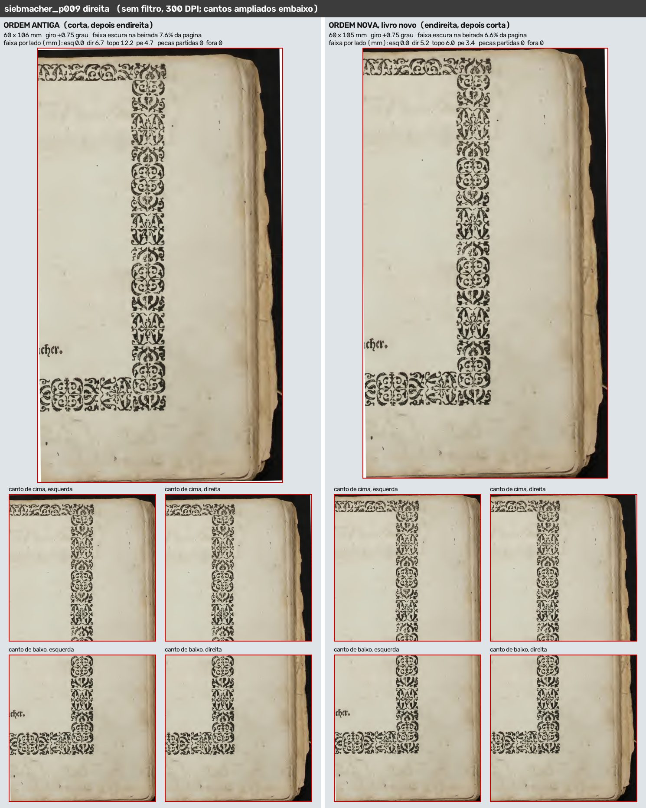
Siebmacher 9 (direita): ordem antiga à esquerda, ordem nova (livro novo) à direita; embaixo, os quatro cantos ampliados.
São duas causas diferentes. Nenhuma foi consertada.
Na ordem nova o programa gira a página inteira e só depois procura o corte nela. O giro mantém o tamanho da folha e pinta de branco as cunhas que sobram nos cantos e nas beiradas. Esse branco fica entre a beirada da imagem e a borda preta do scanner. A busca do corte foi feita para a borda preta encostada na beirada, e deixa de reconhecê-la:
core/pipeline.py, função _geometria_endireitando_antes, linhas 759 a 761: reta = rotacionar(em_cinza(), angulo) e logo recorte = detectar_bordas(reta, dpi=dpi).tupla.core/endireitar.py, função rotacionar, linhas 120 a 134: borderMode=cv2.BORDER_CONSTANT, borderValue=borda (branco, 255).core/recortar.py, função _apagar_bordas_solidas, linhas 745 a 779: anda a partir da coluna de fora enquanto a coluna for 80% escura ou mais (while x < limite_x and limpa[:, x].mean() >= FRACAO_BORDA_SOLIDA). Com a cunha branca, a coluna de fora já não chega a 80% e o laço para na primeira: a faixa preta não é apagada e passa a contar como conteúdo.core/recortar.py, _faixa_com_a_tinta, linhas 198 a 212: onde o fundo preto é liso (Antiphon), a cunha branca em cima do preto cria "tinta" nova bem na beirada, e a caixa do corte vai até o fim da folha.alargar_para_o_giro com _parar_no_escuro (core/recortar.py, linhas 602 e 685), que nunca deixava a folga do giro trazer o fundo escuro.Os números, medidos na máscara de tinta que o próprio corte usa (causa.json):
| Página | Lado | Página como veio | Página já endireitada |
|---|---|---|---|
| Cursus 3 | direita | coluna de fora 100% escura; 45 colunas apagadas como borda | coluna de fora 73%; nenhuma apagada |
| Matemática 32 | direita | coluna de fora 100% escura; 100 colunas apagadas | coluna de fora 71%; nenhuma apagada |
| Camões 104 | esquerda | coluna de fora 89%; 12 colunas apagadas | coluna de fora 76%; nenhuma apagada |
| Antiphon 260 | embaixo | 0% de tinta nas 8 linhas de fora | cerca de 40% de tinta nas 8 linhas de fora |
| Antiphon 88 | direita | 0% de tinta nas 8 colunas de fora | cerca de 40% de tinta nas 8 colunas de fora |
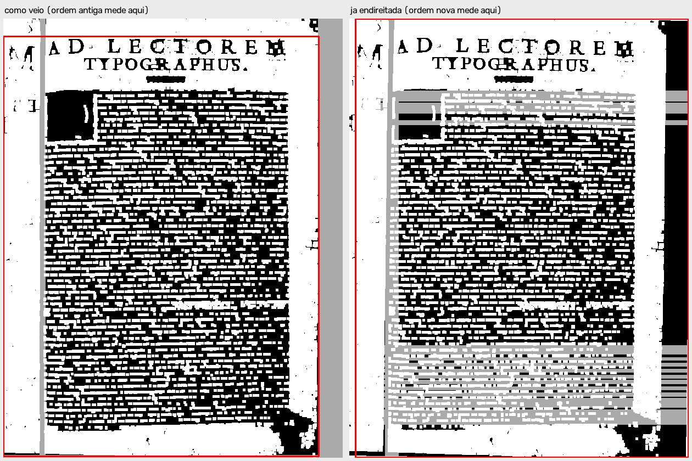
Cursus 3, o que o corte enxerga. Preto = tinta que conta; cinza = o que ele jogou fora; vermelho = o corte. À esquerda (página como veio) a faixa da direita está cinza, jogada fora. À direita (já endireitada) ela está preta, contando como conteúdo, e o corte vai até a beirada.
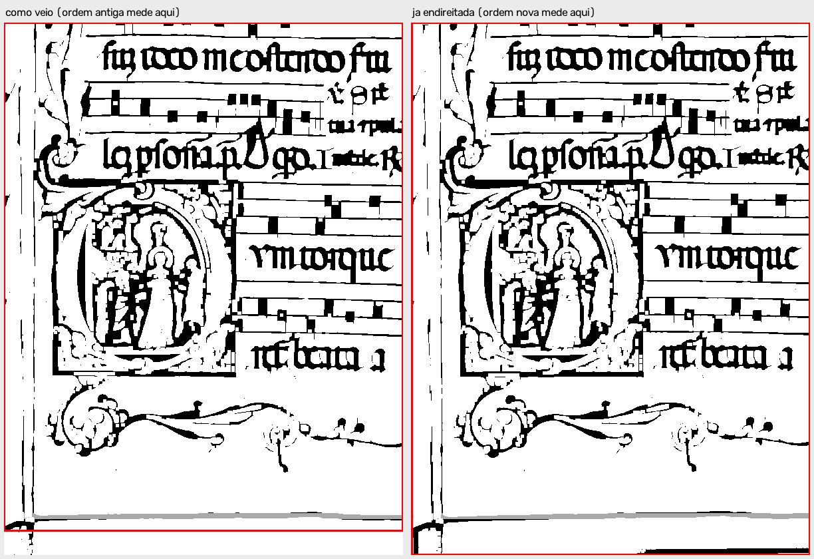
Antiphon 260. Na página já endireitada aparece um risco de tinta na beirada de baixo (o encontro do preto com a cunha branca), e o corte desce até o fim.
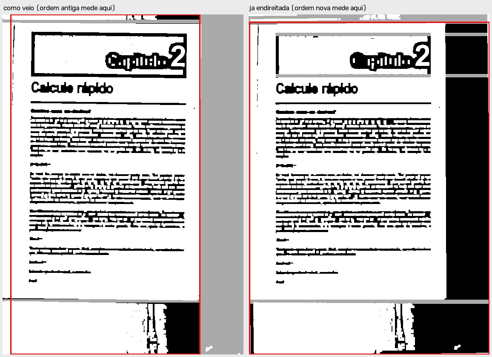
Matemática 32. A faixa da direita: cinza (jogada fora) na página como veio, preta (conteúdo) na endireitada.
Achado ao lado, na mesma imagem do Cursus 3: com a faixa preta contando como tinta, várias linhas de texto passam a ser apagadas da máscara como se fossem "risca de dobra" (as tiras cinza em cima do texto, à direita). Nesta página isso não mudou o corte, mas é um risco: _apagar_riscas_de_dobra, core/recortar.py, linhas 782 a 826. Não vi isso cortar texto em nenhuma das páginas conferidas.
Prova de que a causa é essa (experiência, não é conserto): medi o corte de novo girando a página com a cunha preenchida pela própria beirada, em vez de branco, só para a medida. A faixa some nas cinco páginas: Cursus 3 de 7,4% para 1,0% (antiga 0,5%); Matemática 32 de 31,5% para 18,7% (antiga 18,4%); Antiphon 260 de 7,6% para 3,5% (antiga 3,2%); Antiphon 88 de 12,6% para 8,7% (antiga 8,5%); Camões 104 de 2,7% para 1,1% (antiga 0,5%). Mas essa troca simples piora outras páginas (Camões 66, Boécio 3 e Graduale 221 perdem mais tinta; Egenloff 3 ganha preto; Graduale 222 muda muito de largura), então não serve como está. Números em experiencia-cunha.json; não abri imagens dessa experiência.
Aqui não há borda preta. O corte descarta, de cada lado, os primeiros 0,2% da tinta da página, para a sujeira da margem não segurar o corte (core/recortar.py, SOBRA_DE_TINTA = 0.002, linha 175, usada em _faixa_com_a_tinta, linhas 198 a 212). Os três números ("1", "2", "3") somam 0,197% da tinta da página, logo abaixo do limite. Na página torta eles se espalham por 8 colunas e o limite cai no meio deles; aí a regra de "não partir peça" (_nao_partir_pecas, linha 537) puxa o corte e eles entram. Na página reta eles ficam alinhados em 7 colunas, cabem inteiros nos 0,2% descartados, e a peça que está inteira do lado de fora não puxa o corte. A fraqueza é da regra dos 0,2%, e existe nas duas ordens; a ordem antiga escapava por um triz.
A Escola 7 (título a 1 mm do alto) é parecida: na página reta o risco do scanner do alto é apagado inteiro, e o corte encosta no título com a folga mínima de 1 mm (FOLGA_MM).
Não aparece. Conferido por máquina de dois jeitos:
7485e1b, tirado do git para uma pasta temporária) em 20 páginas, incluindo todas as que pioraram, de duas formas (endireitar pela conta do ScanTailor e pela conta do programa), e gravei cada projeto como aquele programa gravava, sem o campo ordem_do_preparo. Abri esses projetos no programa de hoje: a ordem volta "cortar_antes" e a página sai idêntica ponto por ponto em 40 de 40 (projeto-antigo.json).dados.json) não tem a faixa: Cursus 3 fica em 0,5%.Ressalva: conferi pela conta do programa (Projeto.de_dicionario e renderizar_pagina), não abrindo o projeto pela janela.
tests/test_ordem_do_preparo.py não tem nenhum caso com borda preta.| O quê | Máquina ou olho | Como |
|---|---|---|
| Medidas das 89 páginas nas duas ordens | máquina | O programa de verdade (renderizar_pagina), 300 DPI, sem filtro, três preparos: A = antigo (corta antes, conta do programa), B = corta antes com o ângulo do livro novo, C = livro novo. A comparação B → C isola a ordem. |
| Separar em melhorou, igual, piorou | máquina, depois olho | A conta separou 10 pioras e 7 melhoras; o olho corrigiu (ver tabela). |
| Imagens lado a lado | olho | Abri as 23: as 10 que a conta acusou, as 7 que ela deu como melhora e mais 6 que as folhas de contato mostraram diferentes. |
| As 43 páginas que giram, todas | olho | 11 folhas de contato (antiga e nova lado a lado, pequenas): abri todas. |
| Causa | máquina + olho | Passo a passo do corte na página como veio e na endireitada (causa.py), em 8 páginas; abri 3 das imagens. |
| Projeto antigo | máquina | Programa de antes do G6 contra o de hoje, 40 casos. |
dados.json usa o Preto e branco de fábrica direto, sem a marcação de gravura do programa.As outras 46 páginas não giram e saem idênticas. "Conta" é o que a máquina separou; "olho" é o que vi.
| Página | Giro | Conta | Olho | Faixa escura | Tinta de fora | Tamanho (mm) | Gabarito |
|---|---|---|---|---|---|---|---|
| Antiphon 88 | -0,25° | piorou | PIOROU | 8,5% → 12,6% | 0,00% → 0,00% | 438 × 621 → 456 × 624 | não |
| Antiphon 260 | 0,50° | piorou | PIOROU | 3,2% → 7,6% | 0,00% → 0,00% | 464 × 590 → 463 × 618 | não |
| Antiphonal 1547 6 | 0,12° | igual | igual | 0,3% → 0,6% | 0,00% → 0,00% | 65 × 105 → 65 × 106 | não |
| Antiphonal 1547 46 | 1,50° | igual | igual | 0,0% → 0,0% | 0,08% → 0,07% | 63 × 88 → 63 × 91 | não |
| Antiphonal 1547 76 | 0,25° | igual | igual | 0,4% → 0,6% | 0,05% → 0,05% | 64 × 96 → 64 × 96 | não |
| Antiphonal 1547 192 | 0,19° | igual | igual | 0,0% → 0,0% | 0,02% → 0,02% | 74 × 88 → 74 × 89 | não |
| Antiphonal 1547 252 | -1,00° | igual | igual | 0,3% → 0,4% | 0,04% → 0,02% | 65 × 96 → 65 × 100 | não |
| Boécio 3 | 0,75° | igual | igual | 0,0% → 0,0% | 0,05% → 0,05% | 88 × 123 → 88 × 128 | sim |
| Boécio 8 | -1,12° | igual | igual | 0,0% → 0,0% | 0,06% → 0,07% | 88 × 123 → 88 × 124 | sim |
| Boécio 22 | -0,19° | melhorou | melhorou | 0,0% → 0,0% | 0,13% → 0,01% | 83 × 118 → 83 × 122 | sim |
| Camões 6 | -0,50° | piorou | quase igual | 1,0% → 1,9% | 0,00% → 0,00% | 92 × 130 → 92 × 130 | não |
| Camões 9 | 0,38° | igual | igual | 2,7% → 3,0% | 0,01% → 0,01% | 94 × 131 → 94 × 131 | não |
| Camões 66 | 1,44° | piorou | quase igual | 0,2% → 0,9% | 0,12% → 0,04% | 91 × 131 → 92 × 130 | não |
| Camões 104 | -0,50° | piorou | piorou pouco | 0,5% → 2,7% | 0,01% → 0,01% | 93 × 132 → 95 × 131 | não |
| Cursus 3 | -0,69° | piorou | PIOROU | 0,5% → 7,5% | 0,12% → 0,03% | 201 × 268 → 212 × 279 | não |
| Egenloff 3 | -1,56° | melhorou | melhorou | 3,2% → 1,9% | 0,26% → 0,30% | 346 × 454 → 338 × 454 | não |
| Escola 7 | 0,12° | piorou | piorou (já conhecido) | 0,0% → 0,0% | 0,12% → 1,81% | 165 × 264 → 165 × 246 | sim |
| Escola 35 | -0,81° | igual | igual | 0,0% → 0,0% | 0,01% → 0,01% | 166 × 252 → 164 × 251 | sim |
| Escola 197 | 0,50° | piorou | PIOROU | 0,0% → 0,0% | 0,03% → 0,28% | 160 × 243 → 155 × 243 | não |
| Graduale 221 | 0,75° | melhorou | melhorou | 0,0% → 0,0% | 0,20% → 0,03% | 331 × 452 → 337 × 463 | sim |
| Graduale 222 | -0,88° | igual | igual | 0,0% → 0,0% | 0,02% → 0,02% | 272 × 446 → 266 × 466 | sim |
| Graduale 223 | 0,75° | igual | melhorou | 0,0% → 0,0% | 0,01% → 0,00% | 335 × 445 → 337 × 462 | sim |
| Graduale 269 | 1,00° | igual | igual | 0,2% → 0,4% | 0,02% → 0,01% | 338 × 477 → 338 × 476 | não |
| Graduale 588 | 1,06° | melhorou | melhorou | 0,0% → 0,0% | 0,24% → 0,12% | 306 × 451 → 312 × 472 | não |
| Horas 11 | 0,62° | piorou | igual (a conta errou) | 4,8% → 8,2% | 0,07% → 0,07% | 313 × 477 → 311 × 477 | sim |
| Horas 13 | 0,62° | melhorou | melhorou | 0,0% → 0,0% | 0,08% → 0,02% | 352 × 492 → 351 × 501 | sim |
| Marial 7 | 1,19° | igual | igual | 0,1% → 0,1% | 0,04% → 0,03% | 245 × 331 → 245 × 331 | sim |
| Matemática 32 | 0,75° | piorou | PIOROU | 18,4% → 31,5% | 0,01% → 0,01% | 165 × 297 → 209 × 290 | não |
| Matemática 72 | -0,62° | igual | igual | 32,3% → 32,0% | 0,01% → 0,01% | 210 × 297 → 210 × 295 | não |
| Opus Majus 11 | -0,25° | igual | igual | 0,0% → 0,0% | 0,00% → 0,00% | 107 × 179 → 108 × 179 | sim |
| Opus Majus 20 | 0,31° | igual | igual | 0,0% → 0,0% | 0,00% → 0,00% | 102 × 174 → 102 × 174 | sim |
| Opus Majus 165 | 0,31° | igual | igual | 0,0% → 0,0% | 0,00% → 0,01% | 107 × 190 → 107 × 190 | sim |
| Opus Majus 256 | -0,19° | igual | igual | 0,0% → 0,0% | 0,00% → 0,00% | 195 × 147 → 194 × 146 | sim |
| Palatino 5 | 0,50° | igual | igual | 0,0% → 0,0% | 0,05% → 0,05% | 100 × 176 → 100 × 175 | sim |
| Palatino 10 | -0,12° | igual | igual | 0,0% → 0,0% | 0,05% → 0,05% | 111 × 153 → 112 × 152 | sim |
| Palatino 104 | 0,50° | igual | igual | 0,0% → 0,0% | 0,01% → 0,02% | 108 × 177 → 107 × 177 | não |
| Palatino 113 | -0,75° | igual | igual | 0,0% → 0,0% | 0,01% → 0,01% | 106 × 154 → 107 × 153 | não |
| Pesel 21 | -2,00° | igual | igual | 47,3% → 47,3% | 0,03% → 0,03% | 157 × 241 → 157 × 241 | não |
| Rariora 8 | 0,88° | igual | igual | 0,0% → 0,0% | 0,01% → 0,01% | 121 × 209 → 121 × 209 | não |
| Rariora 155 | -1,19° | igual | mudou muito | 0,0% → 0,0% | 0,04% → 0,03% | 133 × 148 → 133 × 113 | não |
| Rariora 365 | -0,19° | igual | igual | 0,0% → 0,0% | 0,00% → 0,02% | 120 × 214 → 120 × 213 | não |
| Rhetorica 73 | -0,25° | melhorou | melhorou | 0,1% → 0,0% | 0,63% → 0,00% | 136 × 197 → 137 × 199 | sim |
| Siebmacher 9 (direita) | 0,75° | melhorou | melhorou | 7,6% → 6,6% | 0,01% → 0,01% | 60 × 106 → 60 × 105 | sim |
Das 34 páginas do gabarito (32 folhas; o Siebmacher 7 e 9 contam duas cada), 19 giram no livro novo; em nenhuma delas a faixa preta cresceu (o Siebmacher 9 tem preto em volta nas duas ordens; a Horas 11 a conta acusou e o olho não confirmou).
As folhas de contato com todas elas: img/contato-01.jpg a img/contato-11.jpg.
dados.json: as medidas dos três preparos (A, B, C) de cada página.classificacao.json: a separação pela conta (B → C e A → C).causa.json: o passo a passo do corte em 8 páginas.projeto-antigo.json: o programa de antes do G6 contra o de hoje.experiencia-cunha.json: a experiência da cunha repetida.img/: lado-*.jpg (lado a lado), contato-*.jpg, causa-*.jpg, zoom-*.jpg.scripts/: medir.py, classificar.py, montar.py, folhas_de_contato.py, causa.py, projeto_antigo.py, experiencia_cunha.py, relatorio_final.py.Editor de Impressão · gerado em 13/10/2026 às 11:57